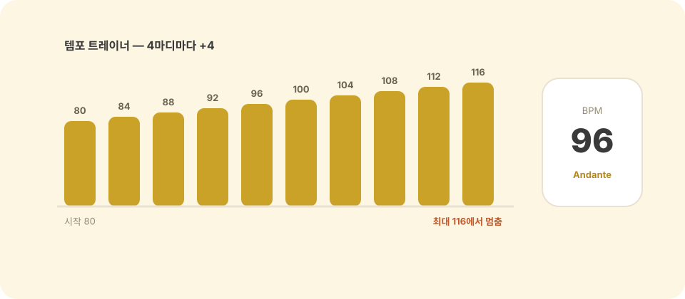

안드로이드 테스터 모집 중 — 뭐타지 · 복지비 청구 · 메트로놈는 아이폰에 나와 있고, 안드로이드는 구글 플레이 정식 공개 전입니다. 먼저 써 보실 분은 테스트 참여로 오세요.
음소거 연습 — 소리 없는 마디에서도 박을 지키는지메트로놈을 켜 두면 박이 맞는 것 같습니다. 그런데 메트로놈을 끄면 어느새 빨라지거나 느려집니다. 박을 듣고 따라가는 것과 스스로 지키는 것은 다르기 때문입니다. 음소거 연습은 그 차이를 확인하는 기능입니다. 템포 트레이너 — 몇 마디마다 조금씩 빠르게악기 연습에서 가장 흔한 방법은 느리게 시작해 조금씩 올리는 것입니다. 80에서 시작해 몇 번 치고 84, 또 몇 번 치고 88. 그런데 손으로 매번 숫자를 바꾸다 보면 흐름이 끊깁니다. 메트로놈 - 템포 트레이너는 그 숫자 바꾸기를 대신합니다.
템포 트레이너 — 몇 마디마다 조금씩 빠르게악기 연습에서 가장 흔한 방법은 느리게 시작해 조금씩 올리는 것입니다. 80에서 시작해 몇 번 치고 84, 또 몇 번 치고 88. 그런데 손으로 매번 숫자를 바꾸다 보면 흐름이 끊깁니다. 메트로놈 - 템포 트레이너는 그 숫자 바꾸기를 대신합니다.
템포 트레이너 — 몇 마디마다 조금씩 빠르게악기 연습에서 가장 흔한 방법은 느리게 시작해 조금씩 올리는 것입니다. 80에서 시작해 몇 번 치고 84, 또 몇 번 치고 88. 그런데 손으로 매번 숫자를 바꾸다 보면 흐름이 끊깁니다. 메트로놈 - 템포 트레이너는 그 숫자 바꾸기를 대신합니다.